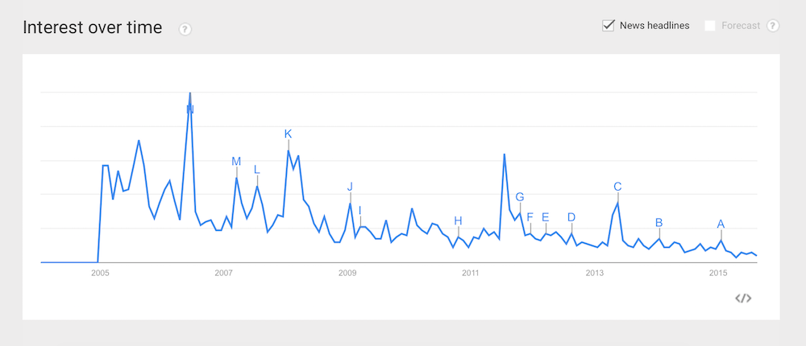

Math is hard. Running a marathon is hard. Writing on the web, no matter what anyone tells you, is not hard. In fact, it’s become so easy that you pick up a following writing nothing more than 140 character messages riddled with abbreviated words, hashtags, and @ replies.
What’s hard is writing words that matter. Evergreen content. Posts that, in a decade, people will still be able to read and discuss. This kind of writing requires a bit of planning, a bit of structure, and a willingness to forego the immediate “viral-ness” of social media—but if you stick with it, you’ll have a real collection of content that’ll withstand the fickle nature of the social web.
- Beware purely social platforms
- Unless you’re internet famous, branding is important
- Choosing the right blog hosting platform
- Always have an exit plan in mind
- Your domain name matters, but maybe less than you think
Beware purely social platforms
From Robert Scoble, circa 2011:
How do you best capture the EMOTION of your time? Blogging? Not for me anymore. Tweeting? Not for me anymore (I will continue being there, mostly to let people who won’t leave that system know what I’m doing and where I’m doing it — it has turned into a UI for my Facebook and Google behaviors). Facebooking? Yes. I’m still there and will be for forseeable future at http://facebook.com/robertscoble
But my hub is Google+.
In a past life, Robert Scoble was one of the many go-to industry insiders worth reading. But for most of this decade, he’s “pivoted” from blogging to social media to pursue the active engagement social media brings—and has been a pretty vocal advocate for the rest of us doing the same. His results though don’t seem all that rewarding.
Exhibit 1 is his love affair with Google+. He poured years of content into that platform, amassed nearly seven million followers, and is now perhaps the biggest boat on a dried up lake. Google+ is pretty much a dead platform these days, and the content on it might as well not exist. Now, Scoble’s primarily on Facebook, posting multiple times a day on a platform known for spotty content delivery unless you’re willing to pay to promote it. (On a personal note, our Facebook posts routinely get delivered to only 15% of our audience—hardly something we’d like to pour too much time into.)
Exhibit 2 is his standing on Google Trends, which tracks news headlines over time.

I’m not saying there’s a one-to-one correlation between his move to social and his flagging popularity (on Google Trends), but from an outsider’s perspective, the move certainly doesn’t seem like it’s helping his newsworthiness.
Unless you're internet famous, branding is important
Perhaps the biggest negative with social media is that with it, you’re forever tied to the platform you’re on. Modern social sites have little-to-no customization (Facebook, Twitter, and Medium look the same no matter what page you’re on), their URL structure is almost universally www.platformname.com/username, and they all come with unique baggage. Platform X is for this clique; Platform Y used to be cool until the adults arrived, etc., etc. Really, unless you’re internet famous (like Robert Scoble), fighting this uphill branding battle on social media sites seems crazy. Having a blog on a custom domain might not give the immediate gratification of a Facebook Like, but it’s still the best way to seem like a person who should be taken seriously on the web.
Plus, with a custom domain name, you can pair your credible blog with a custom email address (a big deal if your blog ever gets media attention).
Choosing the right blog hosting platform
First off, it’s important to know that there is no perfect blog platform. Every platform will have a different set of pros and cons, so it’s important to do a little research to match your needs. Do you like writing in Markdown? Do you want extra site-building features on top of general blogging? Do you want your files to be stored in a Dropbox folder instead of a closed cloud? Is price a concern?
Here are a few options from our Marketplace to start with, broken down by what they do:
General website builders (with blog functionality)
Blog hosting platforms:
Ghost, Tumblr, Postagon, Posthaven, Silvrback
WordPress hosting:
Based on Dropbox or Evernote (content stays on your computer):
For developers:
Always have an exit plan in mind
What’s nice about owning your own domain is that if you don’t like the blog platform you’re on, you can move without confusing your readers. For example, if you’re blogging on Ghost one day, then realize you want to start leveraging your personal brand to start selling things online the next, you can migrate your content to Squarespace without losing your domain. Plus, because you already have a domain and you’re not moving to a closed social platform, you won’t have to worry about your brand name being taken on the next platform you’re headed to.
So before you make any platform decision, be sure to look for a solid import/export tool. Make sure you can easily take all your content with you in case you want to jump platforms—and don’t compromise. Better and better platforms are coming out all the time, so getting stuck with something you’re not happy with is solely on you.
Your domain name matters, but maybe less than you think
Having a killer domain name is a nice thing when you’re telling your friends about your site, but as the spread of content moves to social, it matters less now than ever. Remember that while social media isn’t great as your primary content bucket, it’s definitely good for spreading your content. Articles from your blog might get tweeted, posted, retweeted, commented on, etc., and on social media, the quality of the domain names means a lot less than the quality of the person posting the message (for example, you wouldn’t click on an strange site sent from a complete stranger, but you might if it were sent from your best friend).
Social media sharing aside, your primary objective when choosing a domain name is to not look like a spam site. Here are some simple tips from Moz:
- Avoid hyphens. Hyphens detract from credibility and can act as a spam indicator.
- Top-level domains (like .com) are the extensions associated with domain names. For best ranking results, avoid uncommon top-level domains (TLDs). Like hyphens, TLDs such as .info, .cc, .ws, and .name are spam indicators.
- Avoid domain names longer than 15 characters. Short domain names are easier to remember, easier to share, and have a smaller chance of resulting in typos.
If you want more of an in-depth look at our thoughts on which TLD you should be using for your site, here’s the guide.
 — Chris Hall
— Chris Hall
@hashtaghall
August 31, 2015